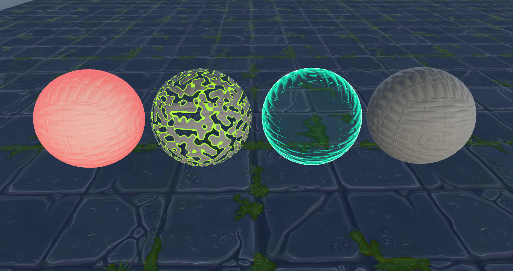
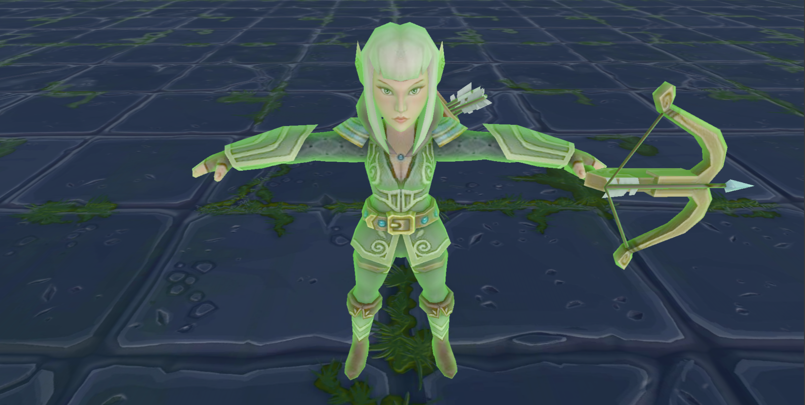
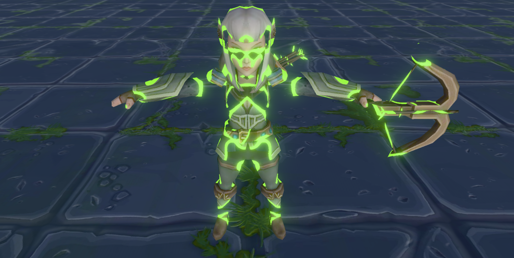
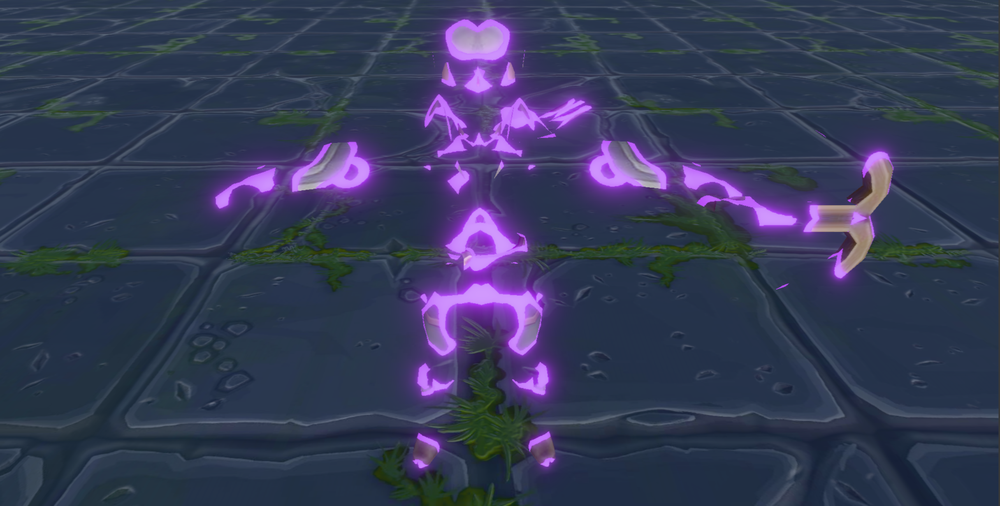
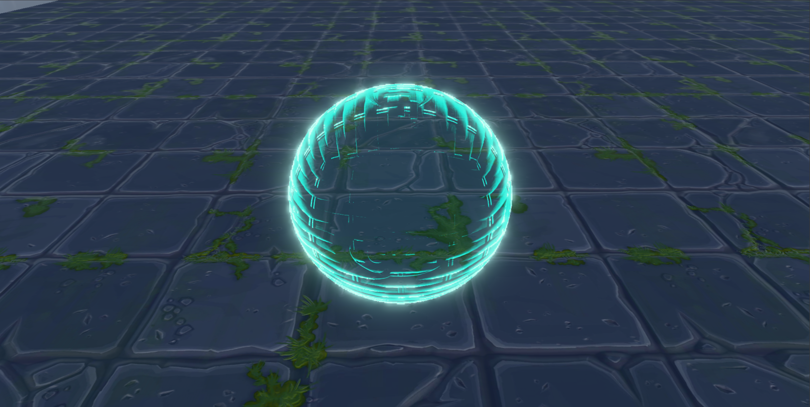
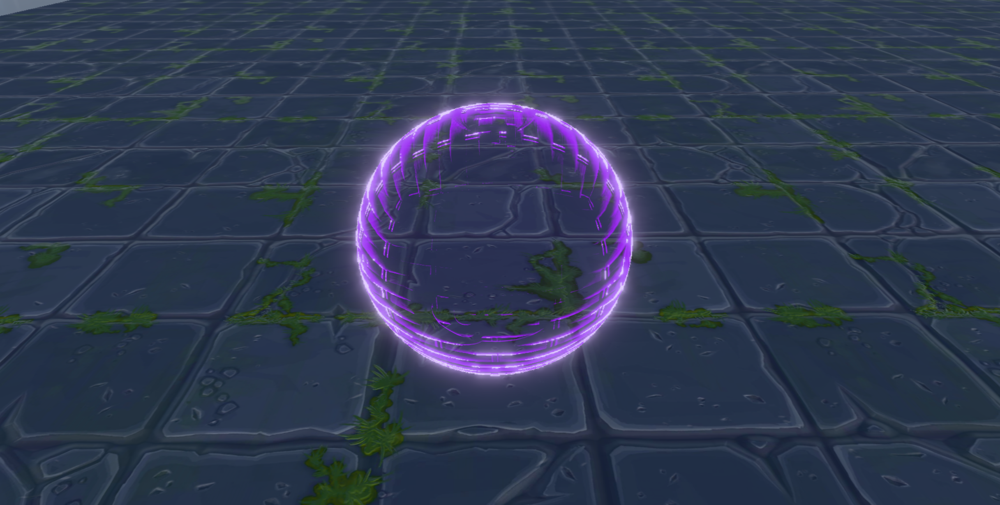
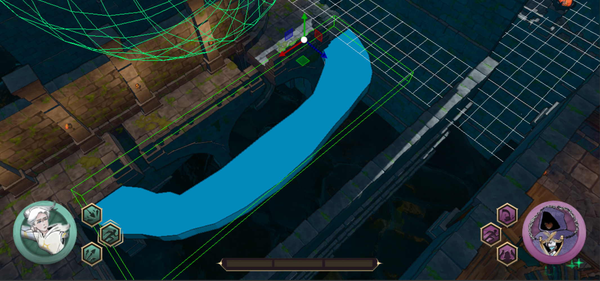
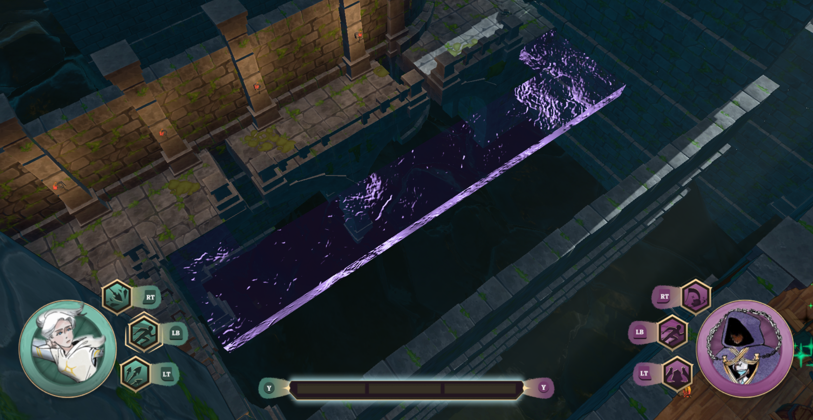

VFX for Bound by Death
Overview
For my master's degree project, Bound by Death, we wanted to add visual effects to provide feedback to players and enhance their experience.
Each effect was a separate task in the project, but I've gathered them all in this post because they have a lot in common.

Problems and objectives
We had a serious lack of feedback: players couldn't tell whether they were taking or dealing damage, dead enemies simply popped off the screen, and we had no way to represent the special paths that Death, one of the game's characters, could use.
With these problems in mind, the art team proposed the following effects:
- A red flash on the mesh to indicate that it has taken damage.
- A dissolve effect to make dead enemies disappear smoothly.
- A spectral effect for paths that only Death can use.
Technical implementation
I wanted the effects to be easy to add to the game, so I took advantage of the game engine's component-based structure and created one component for each effect. Each component has its own accessible configuration, and I also exposed functions through the engine API so the effects could be controlled at runtime through scripting.
After finishing the Damage Highlight and Dissolve effects, I integrated them into the game by modifying the scripts that handled damage and enemy deaths so they could trigger the effects smoothly.
Damage effect.
This effect applies two color tints to the mesh on top of its base textures: a central color that tints pixels facing the camera and a rim color that tints pixels facing away from the camera, usually around the edges of the mesh.
To do this, I created a new struct called DamageHighlightData, which holds all the data the component needs:
- Intensity of the highlight
- Center color value
- Rim color value
- Threshold value to separate the center pixels and the rim pixels
I then created another struct, DamageHighlightCB, to represent the cBuffer that the shader would receive:
- Whether the mesh has a DamageHighlightComponent.
- 12 bytes of padding to align memory with HLSL cBuffers.
- DamageHighlightData struct itself.
Next, I added the values of the component to its UI using ImGui for easy configuration.
Finally, in the Geometry Pass of the Deferred Shading pipeline, I added the new cBuffer to the root signature. When iterating through the scene's mesh renderers, I check whether each game object has a Damage Highlight component. If it does, I save the data in the cBuffer and set the corresponding flag so the pixel shader can read it.
Once the component was finished and the Geometry Pass was updated, I added the new cBuffer to the pixel shader registers.
When sampling the emissive texture to store it in the emissive GBuffer, I check whether the mesh has the component. If it does:
- Calculate the current pixel's rim amount by raising the negated dot product of the view and normal vectors to the configured threshold, then subtracting the maximum threshold.
- Multiply the component's configured center color by the pixel's base color.
- Interpolate between the multiplied center color and the component's configured rim color using the current pixel's rim amount.
- Add the calculated color to the mesh's existing emissive color and store the result in the GBuffer.

Dissolve effect.
This effect makes a mesh disappear using a dissolve effect driven by Perlin noise, with a solid-colored rim around the dissolved areas.
To do this, I created a new struct called DissolveData, which holds all the data the component needs:
- Amount of the mesh to dissolve.
- Rim color value.
- Rim thickness.
I then created another struct, DissolveCB, to represent the cBuffer that the shader would receive:
- If the mesh has DissolveComponent.
- 12 bytes of padding to align memory with HLSL cBuffers.
- DissolveData struct itself.
- 12 bytes of padding to align memory with HLSL cBuffers.
Next, I added the values of the component to its UI using ImGui for easy configuration.
I realized that, instead of using a separate cBuffer for each effect, I could use a single one containing the data for both. So I created another struct, VisualEffectsCB, to represent both effects:
- DamageHighlightCB struct itself.
- DissolveCB struct itself.
After that, in the Geometry Pass of the Deferred Shading pipeline, I replaced the DamageHighlight cBuffer in the root signature with the new one containing data for both effects. When iterating through the scene's mesh renderers, I check whether each game object has a Dissolve component. If it does, I save the data in the cBuffer and set the corresponding flag so the pixel shader can read it.
I also added a new slot for the noise texture in the root signature. When iterating through the scene's mesh renderers, I pass the noise texture through the registers if the game object has a Dissolve component.
With the C++ implementation complete, I added the new cBuffers and register to the HLSL code.
When sampling the base color texture to store it in the base color GBuffer, I check whether the mesh has the component. If it does:
- Sample the noise texture using the pixel's UV coordinates.
- If the noise texture's R-channel value is lower than the received dissolve amount, discard the pixel.
- If the noise texture's R-channel value is greater than the received dissolve amount but lower than that amount plus the rim thickness divided by 10, color the pixel with the rim color and set its emissive value to the same color.
- Otherwise, sample the base color as usual.


Spectral effect.
This effect makes a mesh transparent, with a glow in a customizable color around its edges.
To do this, I first had to develop a new render pass with blending enabled that runs after deferred shading, because until then, we hadn't needed blending at all.
I then created a new struct called SpectralData to send the component's data to the shader:
- Spectral color value.
I also created another struct to represent the cBuffer that the shader would receive:
- Whether the mesh has a spectral component.
- 12 bytes of padding to align memory with HLSL cBuffers.
- The SpectralData struct itself.
- 4 bytes of padding to align memory with HLSL cBuffers.
Next, I modified the Mesh Renderer component by adding a dropdown menu that lets you choose whether a mesh is rendered in the deferred shading pipeline or the blending pipeline.
With the components ready, I iterate through all mesh renderers in blending mode during the blending pass. If a renderer has the Spectral component, I send its data through the cBuffer.
In the new blending-pipeline pixel shader, I render meshes using forward rendering. By default, all meshes are rendered at 50% opacity. Because this pipeline is only used for this effect in our engine, a mesh without the Spectral component is rendered as semi-transparent, making it easy to identify meshes in transparent mode without checking their configuration.
If the mesh renderer has a Spectral component, the pixel shader reads the data and does the following:
- Calculate the negated dot product of the view direction and the normal direction.
- If NdotV is less than 0.4f, set it to 0; if it is greater than 0.9f, set it to 1.0f.
- Then calculate the pixel's alpha by applying smoothstep to the calculated NdotV value between 0.4 and 0.9.
- If the calculated alpha is greater than 0.999f, set the final color to the component's configured color plus one, creating small bloom flashes along the edges.
- If the calculated alpha is less than 0.015f, set it to 0.015f to limit the maximum transparency.
- Finally, return the final color, with or without bloom, using the calculated alpha.


Challenges and problem-solving
I encountered one major issue while developing these effects:
Transparency incompatibility.
While I was implementing the spectral effect, a classmate was working on a flow-map implementation. He reused the dropdown I had added to the Mesh Renderer to introduce a third render mode exclusively for the flow map. He also added a depth pre-pass at the beginning of the frame to mark flow-map pixels in the stencil buffer.
The problem was that he hadn't noticed that his pre-pass marked all pixels from mesh renderers that were not in deferred mode, rather than marking only those in flow-map mode.
The stencil marking caused the deferred shading pass to ignore those pixels, which meant that nothing behind a transparent mesh was rendered.
To fix this, I modified the pre-pass so that it only considered meshes in flow-map mode. As a result, transparent meshes no longer affected the deferred shading pass.


Takeaways and next steps
While developing these effects, I learned how to work with a component-based structure by creating new components and integrating them into the game. I also learned how to modify the necessary scripts so that each effect provides the correct feedback to the player.
I also learned how to work with view-direction and normal-direction vectors to create interesting visual effects.
I learned how to create a pipeline that supports blending and how to adjust opacity to create good-looking transparent meshes.
In the future, I want to improve how the engine decides whether a mesh should be rendered in the deferred shading pipeline or the blending pipeline. My goal is to design an automatic system instead of configuring each transparent mesh renderer by hand.